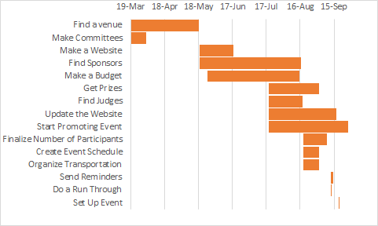
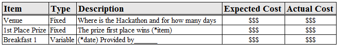
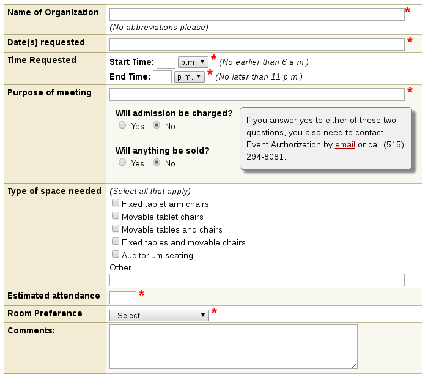
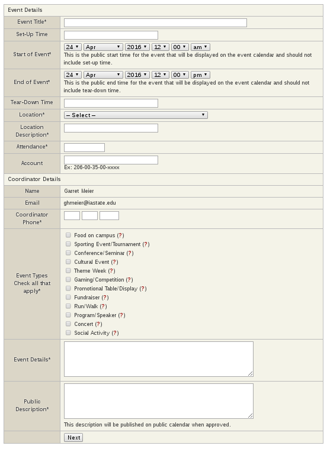

Outline:
- What is a Hackathon (and the purpose of this guide)?
- Gathering a Team and Team Roles
- Creating a Planning Timeline
- Making a Hackathon Budget
- Developing Your Sponsorship Plan
- University Rules and Regulations
What is a Hackathon? (and how this guide will help you plan one)
So you’re interested in planning a hackathon at Iowa State. We built this guide to help you get through planning one without making the same mistakes we’ve made (and believe us we’ve made mistakes).
It might help to know what we’re talking about first. Hackathons are events lasting anywhere from a few hours to multiple days where people gather to build technical projects. At their base, hackathons can be a few people in a room programming, but they often grow to include hundreds of people.  These larger events often include technical presentations, prizes, and lots of experimental hardware. Hackathons are great, but planning hackathons can be daunting and filled with a lot of important details.
These larger events often include technical presentations, prizes, and lots of experimental hardware. Hackathons are great, but planning hackathons can be daunting and filled with a lot of important details.
We built this guide to help you focus on having a great event rather than figuring out the nitty gritty details and running into the same problems we’ve run into before. The rest of this guide is built to give you all the logistical details you’ll need to plan your hackathon at Iowa State as well as some tips, tricks, and best practices based on past experiences. We’ve left planning the specifics of your event (aka the fun part) to you.
The only thing you need to get started, is an existing Iowa State Student organization.
Don’t have a student organization? Here are some options:
- Make one (it’s not too hard). Here's the SAC Guide
- Talk to Iowa State’s hackathon planning club, HackISU (hackiowastate@gmail.com)
- Visit some technical clubs and see if they’d be interested in running a hackathon.
Gathering a Team and Team Roles
Who should you have and what should they do?
President
The president will be responsible for organizing meetings and making sure each committee is staying on track with the timeline as well as finding a venue for the hackathon to take place at.
Vice President
The vice president will also be responsible for checking on the committees and helping the president with tasks. Additionally, the vice president handles recruitment of volunteers and future planning committee members.
Treasurer
The treasurer is responsible for allocating the money so the event does not go over the budget.
Secretary
The secretary is responsible for taking notes at the meetings and emailing them out so the people that were not able to make it are able to stay in the loop.
Public Relations Committee
The public relations is responsible for updating social media, recruiting participants, interviewing for the newspaper, and other ways the hackathon will need to use for getting the event to be known.
Sponsorship Committee
This committee is responsible for going out into the community and finding sponsors for the event.
Logistics Committee
The logistics committee is responsible for getting prizes, planning food, organizing transportation, making the event schedule, and event authorization.
Creating a Planning Timeline
This Gannt Chart shows a timeline of when tasks should be started and about how long they will take.
4-6 months in advance:
Finding a venue is the first task that should be accomplished by the President and the logistics committee will be responsible for getting the event authorized. Committees should be made.
4 months in advance:
A website should be made by the public relations committee. A budget should be formed by the treasurer. The search for sponsors should start by the sponsorship committee.
2 months in advance:
The logistics committee should start looking for prizes to give away. Updates to the website should be done by the public relations committee as well as starting to promote the event. Promoting the event should also be done by the secretary. Finding judges should be done by the logistics committee.
1 month in advance:
The public relations committee should finalize the number of participants based on applications and the current budget of your hackathon. The logistics committee should make the schedule and organize transportation to and from the event.
1 week in advance:
A run through of the event should be done ensuring that each committee knows what there job is for the rest of week and on the day of the hackathon.
The day of:
Set up your hackathon and enjoy!
Check out our sample timeline
We set up a sample timeline for a hackathon taking place on September 19th
| Task | Starting Date | Duration (days) | Ending Date |
|---|---|---|---|
| Find a venue | 19-Mar | 60 | 19-May |
| Make Committees | 19-Mar | 14 | 2-Apr |
| Make a Website | 19-May | 30 | 19-Jun |
| Find Sponsors | 19-May | 90 | 19-Aug |
| Make a Budget | 26-May | 81 | 19-Aug |
| Get Prizes | 19-Jul | 45 | 3-Sep |
| Find Judges | 19-Jul | 30 | 19-Aug |
| Update the Website | 19-Jul | 60 | 19-Sep |
| Start Promoting Event | 19-Jul | 90 | 19-Sep |
| Finalize Number of Participants | 19-Aug | 21 | 12-Sep |
| Create Event Schedule | 19-Aug | 14 | 2-Sep |
| Organize Transportation | 19-Aug | 14 | 2-Sep |
| Send Reminders | 12-Sep | 2 | 14-Sep |
| Do a Run Through | 12-Sep | 1 | 12-Sep |
| Set Up Event | 19-Sep | 1 | 19-Sep |
Making a Hackathon Budget
Creating a budget is an especially critical part of planning a hackathon and really any sort of event. It’s in the numbers where your event translates from the vision in your head into reality and at first, because so much does hinge on them, they can be intimidating. With a little guidance and a great deal of determination, though, you’ll conquer this step as easily as any of the others. The major aspects of creating a budget that we will be discussing are:
- A budget format
- Variable costs
- Fixed costs
- Budgeting for the guests
- Budgeting for surprises
What Goes into a Budget?
When beginning to construct a budget, we recommend describing and sorting every single individual cost you expect to incur into types and categories. For example, types will generally be defined as either fixed, or variable, while categories offer a little more creative freedom with titles such as venue expenses, food and beverage, audio and visual, or prizes. While sorting each component, we also advize including details or a description, predicted expense, and an actual expense (see figure below for clarity).
This method of individual or incremental budgeting helps not only ensure you’ve thought of all the components of your hackathon, but produces the most accurate prediction for the funds you’ll need to obtain while working directly and continuously with fundraising or sponsorship (the source of your funds and the basis for the budget’s capabilities). Another part of the budget to incorporate, while speaking on the interconnection with sponsorship and fundraising, is keeping track of how much money goes through you directly and how much is paid by sponsors. It is important to be aware of every cost, including tax, and how it was paid, even if you never see the money, that way you’ll have a complete understanding of the hackathon’s flow of funds.
Let’s Talk About Variable Costs
As the name implies, these costs are dependent on another part of the planning process, which is almost exclusively the number of people you suspect to have attend your hackathon. Now take a moment to calm your angst. Yes, a very large part of your budget and hackathon depends on the dependability of people to show up. That is indeed a frightening truth, but we’ve been there before and have come out with a few suggestions to minimize the impacts of ever-illusive party guests.
One helpful place to start is to take a look at past hackathons' budget-data to establish a base point for estimating and when you’re event is complete. By using past budgets, you’ll get an idea for the level of interest in the event and be able to estimate a total cost from a turnout and vice versa.
Another good way to begin developing a guest estimation is to create a registration process for the guest. We recommend a method that is quickly and easily completable for the guest such as easy to use online registration software (RegOnline, Event Smart, etc.) or Iowa State’s Student Organization Marketplace. When utilized in the beginning of the planning process, a registration can help track those interested in attending and you’ll be able to better adjust to growth of the event than by simply estimating from past budgets. A particularly tricky aspect of planning for turnout, however, is the fact that a large percentage of those who register for the event will not attend. This is something to be estimated by a little research into your hackathon and other hackathons from the past. Generally, about half of those who register will not attend the event if the event is free for them to attend, but, as to be expected, this number drops substantially if there was some cost to register.
Although people are incredibly unpredictable, find ways to predict their behavior. What do we mean? Well, is travel necessary for them to attend the event and they bought a ticket to ride the bus? If so, they have a higher chance that they’ll attend. If not, there is a much better chance that they won’t be. Using aspects such as this, playing with the odds, is a difficult game to do exceptionally well at, and so we suggest you still plan on having fifty or so more or less people than your final prediction in order to estimate the costs of guest dependent components such as food, drinks, t-shirts, and gifts.
Alright, Now What’s the Deal with Fixed Costs?
Fixed costs are anything that isn’t dependent upon something else, such as your guests. These are generally far fewer than variable costs and an accurate prediction for their cost is usually much easier to find. Prime examples of fixed costs are the venue, security, custodial, and parking costs. Alright, I’ll admit the venue and parking may depend on the number of guests you have, but you normally have to book the venue much sooner than the hackathon’s date and from then on it does not change.
The Guests, the Hackathon is for the Guests
That’s right, you are putting together an event meant to entertain and bring joy, despite the feelings budget building has brought you. When budgeting for the hackathon, and any event, the vast majority of your funds should go toward what the guests attribute worth to. Getting the word out about the event and marketing your product on the big screens and top of search pages would no doubt bring people to your event, but word of mouth is better. A hackathon people enjoyed before means they’ll probably attend another. Constructing an environment and an experience that brings the most worth to the guests should always be the goal of any budget.
So, there was an unexpected surprise?
The final component of any budget is insurance. There are always unforeseen costs associated with any event, and hackathons are no exception. During the planning of the hackathon and soon afterward, there may be unexpected costs, fees, or fines that arise. One example of this is if rented decorations or a venue’s provided decor is damaged. These are costs that are unplanned, but may find their way into your budget. We recommend setting aside 10% of the total cost just for unwelcome surprises. If you make it through your hackathon without the need to tap into those funds, we recommend either using them for the next event, or putting it toward reimbursing travel expenses and similar costs to the guests.
Developing Your Sponsorship Plan
With a team dedicated to getting sponsors for the event, who work closely with those putting together the budget, it is time to learn how to get sponsors. In order to get sponsors, confidence and connections are key. The best sponsors are usually businesses related to tech in some way. Think of ways that you can help their business as well as how they can help you. They may donate money, food, drinks, and/or something from their business to be used as prizes for the event. In return, they may want their company logo to be included in the event. Think of these things before you contact the company so you have a plan.
Remember, the person you are trying to contact is probably very busy, so try to keep communication short and concise. Try to arrange a face-to-face meeting or talk over the phone and tell them about the numerous benefits and publicity they could receive from event and try to persuade them to get involved. Setting up a visual aid like this one is a great way to entice the company to give based on how involved they would like their company to be in the event.
Continue to be aggressive in seeking out potential sponsorships, as these will be the majority of your funds for your event, if not the only funds.
University Rules and Regulations
When throwing any large event at Iowa State, there’s a regulatory process you must follow to take advantage of the University’s resources and help both before and during the event. Though it might seem like a long, tedious process, correctly completing all of the steps will only serve to benefit you in both the short and long run, trust us.
Before getting started, here’s an overview of what we’ll be covering:
- Steps to authorizing your event
- ISU Website Reference
- Protips for club officers (reimbursement, prizes, trademark)
Steps to authorize your event
Going through this process is required for every event a Student Organization holds that isn’t a normal (monthly, weekly, etc.) meeting. In other words, your hackathon must be authorized through event authorization.
So, how do you get authorized to hold your hackathon?A good rule of thumb is to use the following 6 step process:
- Prepare the details of your event
- Reserve your location
- Fill out the event authorization form
- Gather required documentation
- Schedule and attend your event authorization meeting
- Receive authorization confirmation prior to event.
Step 1: Preparing the details of your event:
Prior to beginning the event authorization process, you should have a solid idea of how your event will look. This does NOT mean you and your roommate had a great idea for a hackathon at 2 am last night. Event authorization DOES mean that you have a tentative schedule of events, have reached out to sponsors, began contacting catering services, and have a list (at least 3) of viable location options.
Once you have those items in line, you should go through the list on the Student Activity Committee’s website and complete the Event Authorization Training available to members of student organizations. Now that you’ve completed the training, and know the details of your hackathon, we can start by reserving a location.
Step 2: Reserving your location
We mentioned your hackathon’s location when talking about your budget, but when you make your final list of locations there are a few pros and cons of different types of locations to consider. Iowa State has tons of awesome classrooms you can reserve for no cost. If reserved well in advance of your hackathon, there’s plenty of room space to cater to events of up to 250 people.
University classrooms are your best option if your hackathon involves less than 50 people. If you can fit all of your expected attendees into a few classrooms, they’re well equipped with presentation equipment, outlets and wifi. Remember though, that you cannot serve food or drink inside a university classroom, so you’ll have to obtain special permission from the building’s supervisor to utilize a hallway or atrium for serving food.
For events expecting more than 50 participants, University classrooms are still an option for hosting teams while they work throughout the event. Though, a lecture hall or auditorium would be highly recommended to accommodate such a large number of people all at one time. If you’re looking to reserve larger spaces or multiple classrooms throughout campus, you should also contact the building’s supervisor during this stage of the authorization process to ask for their permission to utilize specific rooms, hallways, and atriums throughout their building.
Each building has a detailed floor plan with a list of all available rooms for reservation. Once you’ve decided which rooms you’d like to reserve, request to reserve them through Iowa State’s Room Reservation Request form.
Protips:
- If your event lasts overnight, or outside the ranges for start or end time on the form, fill in the limit, and make note in the comments section of your additional needs.
- If your room is not present in the list of University Classrooms, you must contact the building supervisor.
- If you plan on including participants who are under the age of 18, contact the Office of Risk Management as soon as possible.
If you are using an event space which is not a University Classroom or a departmental building, follow their reservation procedure.
After you begin the location reservation process, you are ready to submit your event authorization application.
Step 3: Filling out the Event Authorization Form
As soon as you begin reserving your selected location, you can fill out your event authorization application. This application is highly important to alert members of the Event Authorization Committee to your event. You can begin your authorization process on the event authorization home page.
Once there you can head on over to the application tab, and create an event for your desired student organization. They’ll mention room reservations (which you’ve already begun), and you can continue to the application screen.
From here, if you’ve gone through the event authorization training, most of the information is straightforward. Importantly, this is your opportunity as an organizer to let the University know all of the details of your event. On this form, it’s more beneficial to be over-descriptive, than to gloss over important details. The Event Authorization Committee reads this description to get an idea of where possible problem areas might lie in your event plan or where you could possibly be incurring increased liability. Remember, they’re looking to help you run a successful event. So, providing all the necessary information is critical to allowing the committee to help you.
Once you’re satisfied with the application, submit it (you can edit some details afterward).
Step 4: Gather Required Information
After submitting the application, you’ll receive an email confirming your application and eventually, you’ll schedule a meeting with the Event Authorization Committee. In the meantime, you should be making plans and gathering documentation which shows that your hackathon will be run safely and effectively. These documents include (but are by no means limited to):
- Food Sales or Service Agreement - This agreement is required for serving food at your event. The Office of Risk Management has great information about what is and is not allowed in regards to serving food at your hackathon.
- Proof Of Location Reservation - For University Classrooms this will be finished in through the room reservation process (you started this earlier). Otherwise, you’ll need a document which confirms access to the building you plan on using for the hackathon.
- Contact with security services - If your event occurs on campus and overnight, you’ll need some form of security from 11pm to 6am. Not only is this something that’s required, but it’s also just a great plan in general. Even though we hope nothing goes wrong, security can be a great help in dealing with situations before they would get out of hand. The ISU Police is always willing to help, especially with on-campus event. Ask about contacting the Department of Public Safety when you receive confirmation of your event authorization application.
- Contact with custodial services - People make garbage, and garbage has to be cleaned up. Contacting the custodial services of the building you reserve is a prime way to make your job easier. Most buildings will leave extra garbage bags and cans out for your hackathon if you give them the dates at least a week ahead of time. If you’d like more help (and believe us, you will), you can even ask for additional custodial services after your event concludes to ensure ISU’s facilities stay nice for all students. Be prepared for an extra fee if you want custodial services to help clean up your event. Above all, know that it’s YOUR responsibility as event organizer to clean up after the hackathon.
Step 5: Scheduling and Attending the Event Authorization Meeting
After submitting your event authorization application, you’ll work on setting up a meeting with the Event Authorization Committee. These meetings are only 15 minutes and ensure that all the logistical details of your event are covered or in the process of being completed. In scheduling, ensure your adviser and at least the president of your organization can attend.
In preparation for the meeting, review the materials from step 4, have access to your event schedule, and prepare any questions you have about running you hackathon.
At the end of the meeting, the Committee will let you know if you need any additional materials before your event is authorized.
Step 6: Receiving Your Authorization Confirmation
This easiest part of the process; just get in the remaining materials the Event Authorization Committee asked for during the meeting, and wait for the authorization to come through before your event.
ISU Website Reference Links
There are more than a few links which are helpful to access when you’re working with the university, and here are the ones we use often:
- Forms for your treasurer
- Event Authorization
- Food Safety Information
- Rooms Available for Registration
- Room Reservation Form
- Event Authorization Details
- The Event Authorization Committee
- The Trademark and Licensing Office
Student Organization Officer Protips
So you’re an officer of an organization throwing your hackathon at Iowa State. There are a few more things know that will help the hackathon run smoothly with the university:
- Include your adviser. Your organization’s adviser is there to help and almost certainly knows more about the university than you, so include them on email contact you have with staff of the university. Including them in email chains is the easiest way to get help before you run into problems.
- Require W-9’s before giving out prizes. If you’re planning on giving out any prizes, be sure to review ISU’s policy regarding giving away prizes, and require winners to fill out forms before they officially receive their prize. People have a habit of leaving as soon as they get their prize, and it can be tough to track them down after the fact.
- Be aware when you use ISU Trademarks. Iowa State has specific rules for organizations regarding the use of their trademarks, specifically ISU and Cy. If you’d like to use ISU trademarks on event giveaway items or in logos, be aware that you’ll be required to have everything authorized prior to purchase.
- Read over the student organization website policy. Since hackathons are usually in tech, having an awesome website can be critical to publicizing your hackathon. Before you put all your hard work into a website, be sure to review the rules for student organization websites.
- Stay patient. It might be tough sometimes to work through Iowa State’s requirements for throwing your hackathon, but remember that the people involved handle thousands of events throughout the year, so they know how yours can be successful. Remaining pleasant and helpful helps everyone in the long run.